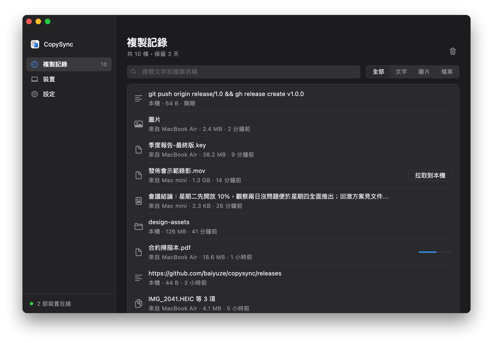
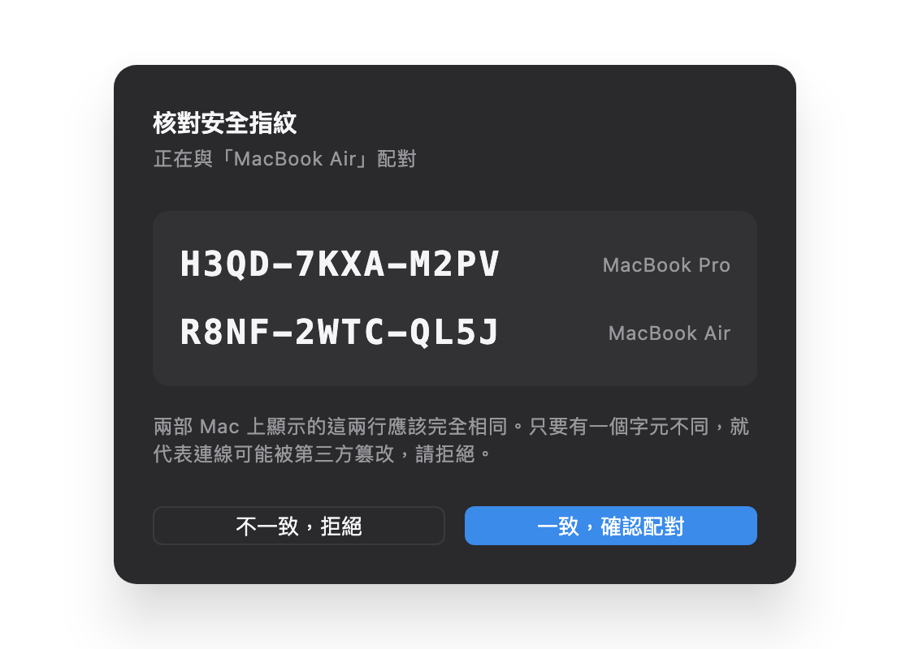

在這部電腦複製，
到那部電腦貼上。
Mac、Windows、Linux 互通。文字、圖片、檔案以至整個資料夾都可以，不必使用同一個帳戶。在同一個網絡裏安裝好就能用，不需要伺服器；跨網絡也可以。資料在你的裝置之間直接傳輸，端對端加密。
版本 1.7.0，免費開源。macOS 13 或以上；Windows 10、11；Linux（x64 與 ARM64）。
第一次使用？看看快速開始，三步設定好 →兩部電腦怎樣連起來
在同一個網絡裏，安裝好 App 就能直接配對，不需要伺服器。跨網絡時，兩部電腦要靠伺服器或 Tailscale 找到彼此，複製的內容不會儲存在上面。按你的情況選一種。
同一網絡
家裏或辦公室，連着同一部路由器。兩部電腦安裝好 App，輸入配對碼就能同步，不需要伺服器，也不需要長期開着的電腦。
同一網絡教學 → 在哪裏都能同步公網伺服器
一部有公網 IP 的 Linux 雲端伺服器，最低配置已經足夠。每部電腦直接連線到它，在家、在公司、在外面都能用，不用另外安裝軟件。
公網伺服器部署教學 → 跨網絡，不用伺服器Tailscale
每部電腦安裝 Tailscale、登入同一個帳戶，配對時輸入對方的 Tailscale 地址。在家、在公司都能同步，不需要伺服器，也不需要長期開着的電腦。
Tailscale 教學 →拿不定主意？快速開始裏有三種方式的比較。
所有裝置上複製過的內容，都在這裏
複製記錄保留最近 3 天的內容，隨時可以放回剪貼簿，圖片按一下就能預覽。50 MB 以內的檔案在你複製的時候已經傳送好了，更大的檔案需要時按一下再拉取。想找以前複製過的，用文字內容或檔案名稱搜尋一下就找到。

按下複製之後
文字、圖片、檔案、整個資料夾，都走同一條路。
偵測
在 Mac 上，背景服務每隔一小段時間查看一次剪貼簿的變更計數，只看計數和類型，不需要授權，也不會彈出系統提示；在 Windows 上，複製的一刻系統就會通知它。
傳輸
文字隨訊息一起發出；50 MB 以內的圖片和檔案打包成串流即時推送；更大的檔案只發送一條記錄，等你需要時再傳。
貼上
另一部電腦先把內容存到本機，再寫入剪貼簿。按下 ⌘V 或 Ctrl+V 貼上的，就是本機上的真實檔案。
為甚麼不用現有的方法
「通用剪貼簿」要用同一個 Apple ID，而且裝置要夠近；AirDrop 每次都要按接受；傳給自己要手動下載，檔案還留在別人的伺服器上。一部 Mac 加一部 Windows 電腦時，系統內建的方法一個都用不上。
| 隔空貼 | 通用剪貼簿 | AirDrop | 通訊軟件 | |
|---|---|---|---|---|
| 不同 Apple ID 之間 | 可以 | 不行 | 要對方接受 | 可以 |
| Mac 與 Windows 之間 | 可以 | 不行 | 不行 | 可以 |
| 不在同一個網絡（家裏和公司） | 可以 | 不行 | 不行 | 可以 |
| 複製後直接貼上，不用按接受 | 可以 | 可以 | 不行 | 不行 |
| 檔案與整個資料夾 | 可以 | 不穩定 | 可以 | 要先壓縮 |
| 找回之前複製過的內容 | 可以 | 不行 | 不行 | 翻查聊天記錄 |
| 內容不經過第三方伺服器 | 不經過 | 不經過 | 不經過 | 經過 |
運作原理
兩部電腦之間直接建立加密連線。在同一個網絡裏，它們自己就能找到對方；跨網絡時，由你的伺服器負責牽線，打不通直連的時候再幫忙轉發。下圖是跨網絡的情況。
- WebRTC 直連，DTLS 加密 資料只在兩部電腦之間傳輸
- 你的伺服器 信令、STUN、TURN 中轉
- 中轉：僅在打不通直連時
公司網絡也能直連
公司雙線、電訊商地址池這類網絡有多個出口，會按目標地址選擇走哪一個。只探測一次只會知道其中一個出口，結果只能經伺服器中轉。隔空貼會探測每個出口，把所有地址都告訴對方。
做了甚麼
- 共用一個端口。所有連線都從同一個本機 UDP 端口收發，向不同伺服器查到的地址才能對得上。
- 探測每個出口。在這個端口上同時詢問 7 部 IP 分散的伺服器，網絡有幾個出口就取得幾個地址；受 DNS 污染的地址會先過濾掉。
- 全部告訴對方。對方逐個嘗試，與實際出口吻合的那一個就能打通。
- 記住見過的出口。某次漏掉的出口如果沒有改變端口，就用「出口 IP + 本機端口」推算補上。
- 定好誰先發封包。有些路由器收到對方先到的封包，會佔用該端口。一方先公佈出口地址，另一方先向那邊發封包，再公佈自己的；重試時兩種次序輪流使用。
- 先中轉，再換直連。第一次握手落到中轉時，閒置時會再打一次洞，打通就換成直連。
用真實的網絡拓撲驗證
NAT 打洞實驗室用 Linux 網絡命名空間與 iptables 搭建這些拓撲，用隔空貼真實的連線程式碼逐一執行，每次提交程式碼都會自動執行。
| 場景 | 結果 |
|---|---|
| 單出口 ↔ 家用路由器 | 直連 |
| 兩個出口，舊版本（對照） | 中轉 |
| 兩個出口 ↔ 家用路由器 | 直連 |
| 四個出口 ↔ 家用路由器 | 直連 |
| 兩個出口，第二個未探測到，沒有歷史 | 中轉 |
| 兩個出口，第二個未探測到，有歷史 | 直連 |
| 兩個出口 ↔ 兩個出口 | 直連 |
| 兩個出口 ↔ 端口隨機分配的 NAT | 中轉 |
| 一開始打不通，之後網絡恢復 | 先中轉，隨後直連 |
| 公司路由器會為外來封包佔用端口 | 直連 |
| 家用路由器會為外來封包佔用端口 | 先中轉，重試一次後直連 |
| 沒有伺服器，同一網段，靠 mDNS 發現 | 直連 |
| 沒有伺服器，兩個網段，一方記得對方地址 | 直連 |
| 沒有伺服器，兩部都阻擋入站連線，都記得地址 | 直連 |
| 沒有伺服器，兩部都阻擋入站連線，只有一方記得 | 連不上（已知限制） |
| 沒有伺服器，兩個網段之間被隔離 | 連不上 |
實測：一部位於有 4 個出口的公司網絡的 Mac 與家裏的 Mac，改動前只能中轉，速度受伺服器頻寬限制在 0.6 MB/s；改動後直連，連上伺服器後約 3 秒建立。
測量過程、設計取捨與遇過的問題，見技術方案。
伺服器看不到你複製了甚麼
- 伺服器不儲存帳戶，也不儲存內容。裝置身份是一把 Ed25519 密鑰，裝置 ID 由公鑰計算得出，伺服器不需要用戶資料表就能驗證身份。
- 配對時由你核對安全指紋。兩部電腦的螢幕會顯示同樣的兩行：雙方各自公鑰的指紋。伺服器有能力替換轉發中的公鑰，但替換之後兩邊螢幕就對不上，這一步就是防範中間人攻擊的關卡。
- 之後的每條訊息都帶簽名，伺服器無法冒充你的裝置。直連通道的證書在握手後還會再核對一次，不一致就立即中斷。
- 中轉也只是轉發密文。TURN 轉發的是加密後的封包，中轉憑證按裝置個別簽發，12 小時後失效。
- 區域網絡裏也一樣。裝置在區域網絡裏廣播的只是一個每天都會改變的匿名標識，看不出是誰的電腦，只有開啟「搜尋附近裝置」時才會帶上裝置名稱；配對同樣要核對指紋，之後的訊息同樣帶簽名。

出問題時會怎樣
每個人的網絡環境都不同。以下這些情況都考慮過，也都有對應的測試。
- 在同一網絡裏找不到對方
- 不同網段、訪客網絡、開啟了 AP 隔離的 Wi‑Fi 會阻礙區域網絡發現。配對時輸入對方配對碼下面顯示的地址就可以；之後地址會被記住，兩邊都換了地址時，在裝置列表裏為它重新輸入一次。
- 系統阻擋區域網絡
- 由 macOS 15 起，背景服務連接區域網絡裏的裝置需要你允許；Windows 第一次執行時會詢問防火牆設定。未允許時 App 會提示，並提供直達設定的按鈕。
- 兩部電腦打不通直連
- 常見於對稱型 NAT 和公司防火牆。會自動改經你伺服器上的 TURN 中轉，內容依然加密，裝置列表裏顯示「中轉」。
- 公共 STUN 伺服器連不上
- 在內地連公共 STUN 時通時斷。伺服器自帶 STUN，用戶端會優先使用它。
- 先連上了中轉
- 中轉握手較快，有時會搶在直連之前。連上之後，發起連線的一方會在閒置時再打一次洞，打通就換成直連；正在傳送檔案時不會打擾。
- 對方進入睡眠、斷網或重新啟動
- 連線悄悄斷了也能察覺，會立即關閉並重新連線。這期間複製的內容會記下來，連上後補發到對方的複製記錄裏，但不會覆蓋對方此刻剪貼簿裏的內容。
- 伺服器斷線
- 自動重新連線，間隔由 1 秒開始倍增、最長 30 秒，並加入隨機抖動，避免大量裝置同時重新連線。同一網絡裏的裝置不受影響，照常同步。
- 檔案太大
- 超過上限的只同步一條記錄，需要時再拉取。拉取時如果來源檔案已被刪除，會清楚告訴你，而不是莫名其妙地失敗。
- 貼到只接受純文字的地方
- 從網頁複製的帶格式文字會同時寫入 HTML 和純文字兩份，貼到哪裏都不會冒出標籤。
- 檔案名稱在 Windows 上不合法
- Mac 上可以用的冒號、問號等字元，收到時會換成對應的全形字元，名稱照樣看得懂；只差大小寫的兩個檔案也不會互相覆蓋。
- 複製的是密碼
- 在 Windows 上，密碼管理工具複製的內容會帶有「不要記錄」的標記，隔空貼看到就會略過：不同步，也不加入複製記錄。
- 仍未授權讀取剪貼簿
- 不會去讀取內容，否則背景程序會卡在一個看不見的系統彈出視窗上。App 裏會提示你授權，並提供直達設定的按鈕。
- 背景服務崩潰
- Mac 上由系統的 launchd、Windows 上由隔空貼自帶的守護程序自動重新啟動，有 10 秒節流，不會無止境地重新啟動。
- 更新了 App，或者移動了它的位置
- 開啟 App 時會自動修正登入項目，並把背景服務重新啟動到新版本。
安裝
每部電腦安裝一個 App。在同一個網絡裏安裝好就能配對；跨網絡時，再選一種方式讓兩部電腦找到彼此。第一次安裝可以跟着快速開始做。
Mac
- 下載 DMG，開啟後把隔空貼拖進「應用程式」。Apple 晶片與 Intel 處理器的 Mac 各有一個版本，下載頁會告訴你怎樣分辨自己的 Mac 屬於哪種。
- 從「應用程式」裏開啟。第一次會提示「無法驗證開發者」：隔空貼仍未經 Apple 公證。到「系統設定 → 私隱與保安」，按頁面下方的「強制開啟」，只需要做一次。
- 按「啟用背景同步」。系統詢問是否允許讀取剪貼簿、能否尋找本地網絡上的裝置時，都選擇允許。
- 跨網絡同步時，在「設定」裏填入伺服器地址
ws://伺服器地址:8787/signal，按 Enter；在同一個網絡裏則不用填。
Windows
- 執行 CopySync-Setup.exe。它會安裝在目前用戶的目錄下，不需要管理員權限。隔空貼仍未有程式碼簽署，Windows 會提示「Windows 已保護您的電腦」：按「其他資訊」，再按「仍要執行」。不想執行安裝程式的話，可以下載免安裝版。
- 開啟隔空貼，按「啟用背景同步」。關閉視窗後，它會在右下角的系統匣裏繼續執行。防火牆詢問時選擇允許。
- 跨網絡同步時，在「設定」裏填入伺服器地址，按 Enter；在同一個網絡裏則不用填。
Linux
- Ubuntu、Debian 等發行版下載 .deb，執行
sudo apt install ./CopySync-linux-amd64.deb；其他發行版下載 tar.gz，解壓後執行./CopySync/install.sh。 - 從應用程式選單開啟隔空貼，按「啟用背景同步」。之後它會在登入時自動啟動。
- 跨網絡同步時，在「設定」裏填入伺服器地址，按 Enter；在同一個網絡裏則不用填。
配對：一部電腦按「裝置 → 新增裝置」產生 6 位配對碼，另一部輸入它；兩邊螢幕上的兩行安全指紋完全一致後確認。不在同一網段時，輸入配對碼的同時，也要輸入它下面顯示的地址。Mac、Windows、Linux 之間怎樣組合都一樣。
技術規格
| 版本 | 1.7.0，發佈 |
|---|---|
| Mac 用戶端 | macOS 13 Ventura 或以上；Apple 晶片與 Intel 處理器的 Mac 各有一個安裝檔，約 25 MB，不需要 Rosetta；另有兩種 Mac 通用的版本，約 47 MB |
| Windows 用戶端 | Windows 10 與 Windows 11，x64；為目前用戶安裝，不需要管理員權限；安裝檔約 23 MB |
| Linux 用戶端 | x64 與 ARM64；.deb（Debian、Ubuntu 等）或 tar.gz（其他發行版），約 22 MB；需要 X11 桌面，或帶 XWayland 的 Wayland 桌面（GNOME、KDE 等預設都已包含）；GTK 3 |
| 伺服器 | 可選，只在跨網絡時需要。Linux x86_64 或 ARM64（systemd 或 Docker）、macOS（Intel 與 Apple 晶片）、Windows 10 與 11 x64（系統服務）；約佔 15 MB 記憶體 |
| 介面語言 | 簡體中文、繁體中文（台灣、香港）、English、日本語，預設跟隨系統，可在設定裏切換 |
| 同步的內容 | 純文字、帶格式的文字、圖片與截圖、檔案、資料夾，可以按類型關閉 |
| 傳輸 | WebRTC 數據通道，直連優先，打不通時經 TURN 中轉；同一網絡裏經 mDNS 發現、UDP 8788 交換連線資訊；多出口網絡會逐一探測每個出口；檔案以 tar + zstd 串流方式打包 |
| 加密與身份 | DTLS 端對端加密；裝置身份為 Ed25519 密鑰；信令訊息逐條簽名 |
| 配對 | 6 位配對碼，5 分鐘內有效，字元集剔除了 0/O、1/I 等容易混淆的字元；配對時人手核對安全指紋 |
| 自動同步上限 | 預設 50 MB，可在 1 MB 到 1 GB 之間調整 |
| 記錄保留 | 預設 3 天，可在 1 小時到 30 天之間調整，到期自動清理 |
| 實測速度 | 區域網絡直連傳輸 20 MB 檔案約 330 毫秒，校驗和一致 |
| 技術架構 | 背景服務與伺服器用 Go（Windows 上以純 Go 呼叫 Win32，Linux 上以純 Go 使用 X11 協定），介面用 Flutter（三個系統共用一套程式碼），訊息定義用 Protocol Buffers |
| 授權 | GNU AGPL-3.0 |
常見問題
開啟 UU 遠程時，為甚麼不斷出現 .uuremote_ 檔案？
UU 遠程會在系統剪貼簿裏寫入臨時佔位檔案，舊版隔空貼把它們當成普通檔案反覆記錄和轉發。1.3.2 會在傳送和接收時過濾已確認的佔位命名，並在啟動時清理純佔位記錄。正常的空檔案、隱藏檔案和大檔案不受此規則影響。50 MB 只決定是否自動傳輸，與 UU 的 UDP P2P 設定無關。建議兩端都升級；其他軟件如果也同步剪貼簿，仍可能產生普通內容的重複記錄。
和 macOS 內建的「通用剪貼簿」有甚麼分別？
「通用剪貼簿」要求兩部裝置登入同一個 Apple ID、開啟藍牙和 Wi‑Fi，而且要靠近，也只能在 Apple 裝置之間使用。隔空貼在同一個網絡裏安裝好就能用；跨網絡時，只要兩部電腦能連上你部署的伺服器，或者都安裝了 Tailscale 就可以：不同 Apple ID、一部在家一部在公司、一部 Mac 一部 Windows 電腦，都沒有問題。另外它有複製記錄，大檔案也可以按需要拉取。
如果你的兩部 Mac 用同一個 Apple ID、總是放在一起、主要複製文字，系統內建的功能已經足夠。
伺服器會看到我複製的內容嗎？
不會。直連時資料根本不經過伺服器；需要中轉時，伺服器轉發的是經 DTLS 加密的封包。伺服器不儲存帳戶，也不儲存任何複製內容。程式碼是開源的，你可以自己核對。
公司網絡（雙線、多出口）能直連嗎？
能。這類網絡按目標地址選擇出口，隔空貼會在同一個端口上向多部伺服器探測，取得每個出口的地址後一併發給對方，由對方逐個嘗試。實測公司 4 個出口與家用寬頻之間可以直連。對方是端口隨機分配的 NAT 時仍會經中轉。
一定要自己準備伺服器嗎？
家裏沒有公網 IP，能在家和公司之間同步嗎？
能，有兩種做法。如果有一部公網伺服器，把伺服器部署在上面，家裏和公司的電腦都直接連線到它，見公網伺服器部署。沒有的話，每部電腦安裝 Tailscale、登入同一個帳戶，配對時輸入對方的 Tailscale 地址，見Tailscale 教學。
在同一個網絡裏，為甚麼找不到另一部電腦？
先看兩部是否真的在同一個網段：公司裏的有線和無線網絡、訪客網絡、開啟了「AP 隔離」的 Wi‑Fi 往往互不相通，區域網絡發現無法穿過。這時在輸入配對碼的那部電腦按「不在同一網段？」，填上另一部電腦配對碼下面顯示的地址。
在 Windows 上，第一次執行時防火牆會詢問，要選擇允許；如果按過取消，可在「設定 → 區域網絡」裏按「允許」。在 Mac 上，要在「系統設定 → 私隱與保安 → 本地網絡」裏開啟 CopySync Daemon。詳情見同一網絡教學。
支援 Windows 和 Linux 嗎？iPhone 呢？
支援 Windows 10 與 Windows 11（x64），與 Mac 互通。複製的檔案在 Windows 上貼上後就是真實檔案，可以直接貼進檔案總管、微信、Office。
也支援 x64 與 ARM64 的 Linux 桌面：X11，或帶 XWayland 的 Wayland 桌面（GNOME、KDE 等預設都已包含）。複製的檔案可以直接貼進檔案管理員。
暫不支援 iPhone 和 iPad：iOS 不允許 App 在背景監測剪貼簿，做不到複製後即時同步。
為甚麼第一次開啟時系統會阻擋一下？
隔空貼仍未經 Apple 公證，Windows 版也仍未有程式碼簽署，兩者都需要每年付費的證書。
在 Mac 上，到「系統設定 → 私隱與保安」，按頁面下方的「強制開啟」；在 Windows 上，在「Windows 已保護您的電腦」提示裏按「其他資訊」，再按「仍要執行」。兩者都只需要做一次。
大檔案怎樣處理？
預設 50 MB 以內的內容在你複製時就會推送到另一部電腦，那邊可以直接貼上；更大的檔案只同步一條記錄，需要時在複製記錄裏按「拉取到本機」再傳送。上限可以在設定裏調整。
免費嗎？公司可以用嗎？
免費。隔空貼以 GNU AGPL-3.0 開源，個人和公司都可以免費使用和修改。分發它，或透過網絡提供修改過的版本時，需要以同樣的授權公開原始碼。
兩部電腦，一個剪貼簿。
版本 1.7.0，免費開源。macOS 13 或以上；Windows 10、11；Linux（x64 與 ARM64）。
第一次使用？看看快速開始，三步設定好 → 在 GitHub 上查看原始碼